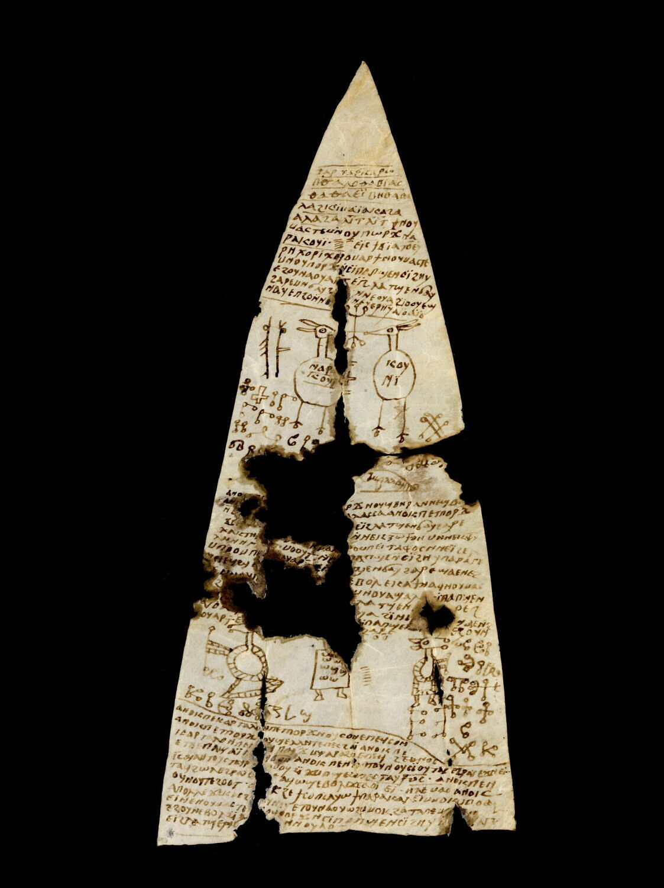
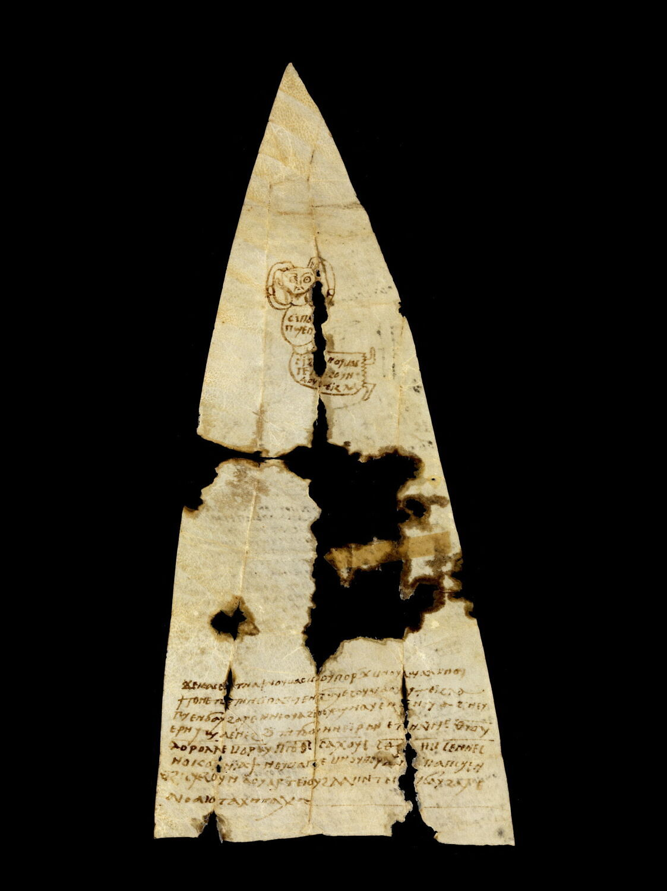
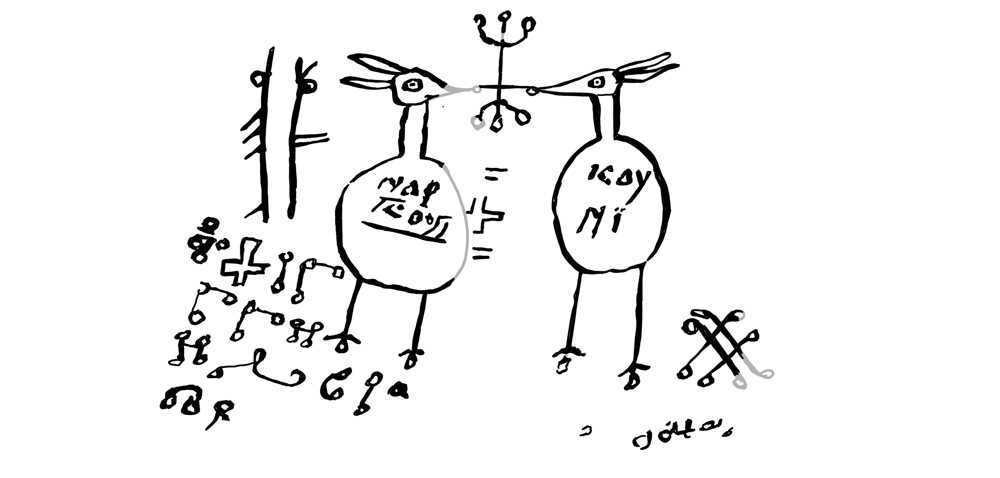
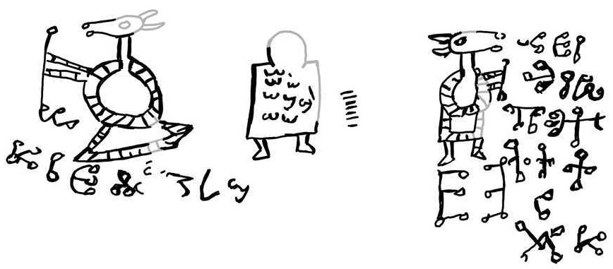
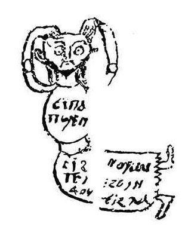

Entry0001
This artifact is a particular favorite of mine, a spell to separate two people that was written in Coptic, as it highlights characteristics that are representational of conventional wording found in many spells while also having some unique structures. It was first discovered in Edfou, Egypt, and is presumed to have originated anywhere from 800-1000 AD. This would place the artifact in a region that was largely dominated by Islamic Law, under the Abbasid Caliphate or Fatimid Caliphate. This is what makes the writing in Coptic very interesting. The official administrative language would have been Arabic, having almost completely replaced Greek by the 8th century. This extends even to Christians who were expected to write in Arabic in official contexts. However, Coptic, the language belonging to the Coptic Orthodox Church and Egypt's Christian ethno-religious group, was widespread in the rural Christian areas. Many people in the region, especially urbanized areas, were bilingual but increasingly gave way to Arabic in day-to-day life closer to the 10th century.
We then must consider who was literate at the time. Those literate in Arabic were likely to be associated with official duties, such as judges, administrators, and tax officials as well as other members of the community such as merchants, scribes, and the well educated. In contrast, those literate in Coptic either had official duties that required knowing Coptic, such as a bureaucrat or scribe, or they held a religious position such as priests, monks, or other positions of religious leadership. Christians of the era were not as metropolitan, less often being literate at all and living in smaller agricultural communities.
Turning to the craftsmanship of the artifact itself we can immediately notice a few details. Namely, though the author is literate, their work is not of a professional grade. That is to say, scribes and monks in monasteries often had tools available to them to make a work appear more legible and clear. Notably, as you will see below, there are lines separating the paragraphs. These lines are not uniformly straight, in fact in one section the line blatantly curves around several glyphs that have been written. The lines are adaptive and likely done freehand, meaning the author likely lacked ruling tools or a copying grid. This also appears to be the first, or only, attempt instead of a perfected copy created through iteration. This means that our author is likely adjacent to education, such as someone studying under a priest or local religious leader, rather than personally having the training to ensure that the work is carefully aligned. This is, to me, also more evidence that our author was indeed a member of a rural community who had deep connections to the religious and magical world.
The non-professional literacy of the author is important, especially when writing in Coptic. There are several names mentioned in this work that, as of today, I cannot align with known deities, spirits, folklore, or any other entities. This may be due to how the names were written down, that is, the names were written phonetically rather than having a fixed or standardized spelling. It is likely that the names listed in this artifact are simply written as the author understood them to be pronounced. As regions vary in pronunciation, and with the sharp increase of Arabic and decline of Coptic, the local dialect and language may have varied greatly, rendering the phonetic writing of the name of the entities as unrecognizable even if they correspond to well known entities.
This non-professional literacy does not invalidate the author in any way, however. Rather, as previously stated, the author is adjacent to higher education. As we go through the translation of the spell, it becomes quite clear that this spell blends knowledge and belief of contemporary Christian faith with local folk knowledge and beliefs. Specifically, the practitioner puts stock into the power inherent in the Abrahamic God, Satan, the various entities the practitioner calls upon, as well as the power of the tombs of dead pagans. More so, this spell is directly an invocation, not so much as taking the external entities fully into the self but a fraction of their being and energy, which is more typical of priestly rituals within Egyptian temple tradition, instead of an evocation which is far more typical of orthodox Christian beliefs.


A transcription and translation of the text was found on the Kyprianos Magical Text Database. The text will first be presented in its original Coptic transcription on the left, its corresponding English translation on the right.
At the top of the text we first see the following:
ⲧ̅ⲁ̅ⲣ̅ⲧ̅ⲁ̅ⲣ̅ⲓ̅̈ⲥ̅ⲁ̅ⲣ̅ⲱ̅ ⲡ̅ⲑ̅ⲁ̅ⲁ̅ⲥ̅ⲧ̅ⲁ̅ⲃ̅ⲓ̅̈ⲁ̅ⲥ̅ ⲑ̅ⲁ̅ⲑ̅ⲁ̅ⲉ̅ⲓ̅̈ⲃ̅ⲏ̅ⲑ̅ⲁ̅ⲑ̅ⲁ ⲗ̅ⲁ̅ϩ̅ⲕ̅ⲓ̈̅ⲙ̅ⲁ̅ⲓ̈̅ⲁ̅ⲕ̅ⲁ̅ϩ̅ⲁ̅ ⲁⲗ̅ⲁ̅ϩ̅ⲁ̅ ⲗ̅ⲓ̈̅ⲧ̅ⲗ̅ⲓ̈̅ⲧ̅ ϯ ⲛⲟⲩ- ⲙⲁ̅ⲥ̅ⲧ̅ⲉ̅ ⲙ̅ⲛ̅ ⲟⲩⲡⲱⲣϫ ⲛⲁ- ⲣⲁⲕⲟⲩⲓ̈ ‧ = ⲉ̅ⲓ̈̅ⲥ̣̅ϯ̅ⲃ̅ⲓ̈̅ⲁ̅ ⲧ̅ⲟ̅ⲉ̅ⲩ̅ ⲣ̅ⲏ̅ⲭ̅ⲟ̅ⲣ̅ⲓ̈̅ⲭ̅ⲟ̅ⲣ̅ ⲟⲙⲁⲣ ϯ ⲛⲟⲩⲙⲁⲥⲧⲉ ⲙⲛ ⲟⲩⲡⲟⲣϫ ⲛ̇ⲥⲓ̈ⲡⲁ ⲡϣⲉ ⲛⲥⲓ̈ϩⲏⲩ ⲉϩⲟⲩⲛ ⲁⲟⲩⲁⲣⲧⲉⲓ̈ϩⲗⲁ ⲧϣⲉ ⲛϭⲁⲩ- ϩⲁⲣⲉ ⲙⲛ ϭⲁⲩϩⲁ̣[ⲣⲉ] ‧ ⲛⲛⲉⲟⲩⲁ ϩⲓ̈ⲟⲟⲩ ⲉϣ- ⲛⲁⲩ ⲉⲡϩⲟ ⲛ̇ⲛⲟⲩ̣[ⲁ ϩ]ⲓ̣̈ ⲛⲉⲩⲉⲣⲏⲩ ⲁⲓ̈ⲟ ⲁⲓ̈ⲟ
Tartarisarō, Pthaastabias, Thathaeibēthatha, Lahkimaiakaha, Alaha, Litlit, give hatred and separation! Narakoui (7 times). Eistibia, Toeu, Rēkhorikhor, Omar, give hatred and separation to Sipa, the son of Sihēu, towards Ouarteihla, the daughter of Cauhare, and Cauhare; none of them will be able to look at the face of another of them, yea, yea!
There is a line breaking the text apart, followed by an image. This image is visible in fig. 1, depicting the front face of the parchment. It appears to depict two figures and has various symbols alongside them.
The symbols inside the body of the figure on the left are the following:
ⲛ̅ⲁ̅ⲣ̅ⲁ̅- ⲕ̅ⲟ̅ⲩ̅ⲓ̅
Narakoui
The symbols inside the body of the figure on the right are the following:
ⲕⲟⲩ- ⲛⲓ̈
Kouni
There is another line separating the images from the rest of the text. The text then continues:
ⲁⲛⲟⲕ̣ ⲡ̣ⲉ̣[ⲕⲁⲣⲧⲟⲗⲁⲛ ⲡⲉⲧⲡⲟ]ⲣϫ ⲛⲟⲩϣⲃⲏⲣ ⲁⲛⲛⲉϣⲃⲏ̣[ⲣ] ⲁⲛ[ⲟⲕ ⲡⲉⲧⲡⲟⲣϫ . . . . ⲛⲑ]ⲁⲗⲁⲥⲥⲁ ⲁⲛⲟⲕ ⲡⲉⲧⲡⲟⲣ̅ϫ̅ ⲛ̅ⲥ[ⲓ̈ⲡⲁ ⲡϣⲉ ⲛⲥⲓ̈ϩⲏⲩ ⲁⲟⲩⲁⲣⲧ]ⲉⲓ̈ϩⲗⲁ ⲧϣⲉ ⲛϭⲁⲩϩⲁⲣⲉ ϫⲉⲕ̣ⲁ̣ⲥ̣ [ϩⲛ ⲧⲉⲩⲛⲟⲩ ⲉⲧⲟⲩⲛⲁⲟⲩⲱϩ] ⲛ̇ⲛⲉⲕⲍ̅ⲱ̅ϯ̅ⲟⲛ ⲙⲛ ⲛⲉⲕⲫ̣̅ⲩ̅- ⲗⲁⲕⲧⲏⲣ̣[ⲓⲟⲛ] ⲙ̣[ⲛ ⲛ]ⲉ̣ⲕⲣⲁⲛ̣ [ⲉⲡ]ⲣⲟ ⲙⲡⲉⲓ̈ⲧⲁⲫⲟⲥ ⲛⲛⲉⲓ̈ϩⲉⲗ- ⲗⲏⲛ ⲛⲁ̣[ⲓ ⲉ]ⲧⲙⲟⲟⲩⲧ : ⲛ̇ⲉ[ⲥⲓ̈]ⲡ̣ⲁ ⲡϣⲉ ⲛⲥⲓ̈ϩⲏⲩ ⲡⲁⲣⲁⲅⲉ ⲙⲡⲣⲟ ⲙⲡⲏ̣[ⲓ ⲛ̅]ⲟⲩⲁⲣⲧⲉⲓ̈ϩ[ⲗⲁ ⲧ]ϣⲉ ⲛ̣ϭⲁⲩϩⲁⲣⲉ ϣⲁ ⲉⲛⲉϩ ⲛⲛⲉϥϣ ⲉ[ ca. 11 ? ] ⲉⲃⲟⲗ ⲉⲕⲁϯ ⲛⲁϥ ⲛ̣ⲟⲩⲙⲁⲥ- [ⲧ]ⲉ ⲙⲛ ⲟ̣ⲩⲡ̣[ⲟⲣϫ ⲙⲛ ⲟⲩϯⲧⲟⲛ] ⲙⲛ ⲟⲩⲁϣⲁⲗ [ⲛ]ⲥ̣ⲓ̈ⲡⲁ ⲡϣⲉ ⲛ- [ⲥⲓ̈]ϩⲏ̣[ⲩ ⲉϩⲟⲩⲛ ⲁⲟⲩⲁⲣⲧⲉⲓ̈ϩ]ⲗⲁ ⲧϣⲉ ⲛ[ϭⲁⲩϩⲁ]ⲣⲉϩ [ⲛⲛⲉⲟⲩⲁ ϩⲓⲟⲟⲩ ⲉϣⲛⲁⲩ ⲉⲡϩⲟ ⲛ̇ⲛ]ⲟⲩⲁ ϩⲓ̈ ⲛⲉⲩ[ⲉⲣⲏⲩ] ϣⲁ ⲉⲛⲉϩ ⲁⲓ̈ⲟ ⲁ[ⲓ̈]ⲟ ϯ [ⲛⲟⲩⲙⲁⲥⲧⲉ ⲙ̅ⲛ̅ ⲟⲩⲡⲟⲣϫ ⲛⲥ]ⲓ̈ⲡⲁ ⲡϣⲉ ⲛⲥ̣ⲓ̣̈[ϩⲏⲩ] ⲉϩⲟⲩⲛ [ⲁ]ⲟⲩⲁⲣⲧⲉⲓ̣̈[ϩⲗⲁ ⲧϣⲉ ⲛϭⲁⲩϩⲁⲣⲉ ⲙⲛ ϭⲁⲩ]ϩⲁⲣⲉ
I am the [sheet, the one who] separates a friend from friends; I [am the one who separates the earth from the] sea; I am the one who separates Sipa, [the son of Sihēu, from] Ouarteihla, the daughter of Cauhare, so that [as soon as] your images and your amulets [and] your names [are placed at the] door of this tomb of these pagans, these dead ones, Sipa, the son of Sihēu, will not visit the door of the house of Ouarteihla, [the] daughter of Cauhare, ever! He will not be able to […] out! You will give hatred and separation [and strife] and a cry [to] Sipa, the son of Sihēu, towards Ouarteihla, the daughter of Cauhare! [None of them will be able to look at the face of] another of them, forever, yea, yea! Give [hatred and separation to] Sipa, the son of Sihēu, towards Ouarteihla, [the daughter of Cauhare and] Cauhare!
There is once more a line separating the text from the next image. It appears to have three figures, the two outer figures are facing away from each other and the figure in the center.
Inside the body of the figure in the center is the following text:
ⲱⲱ̣ . ⲱⲱ . ⲱϣϣ ⲱⲱ]
There is no translation for this section.
A line separates the above image and the rest of the text. The text then concludes on this side of the parchment with the following:
ⲁⲛⲟⲕ ⲡⲉⲕⲁⲣⲧⲁⲗⲟⲛ ⲡⲉⲧⲡⲟⲣϫ ⲛⲟⲩⲥⲟⲛ ⲉⲡⲉϥⲥⲟⲛ ⲁⲛⲟⲕ ⲡⲉⲧⲡⲟⲣϫ ⲛ̣ⲟⲩϣⲉⲗⲗⲏⲧ ⲉⲡⲉⲥϩⲁⲓ̈ ⲁⲛⲟⲕ ⲡⲉ- ⲕⲁⲣⲧⲁⲗⲟⲛ ⲡⲉⲛ̣[ⲧⲁ]ϥⲡⲟⲣϫ ⲙⲫⲁⲣⲁϩⲟ ⲉⲡⲉϥϩⲉⲑⲛⲟⲥ ⲉⲧⲃⲉ ⲡⲁϣⲁⲓ̈ ⲛ̣[ⲛⲉ]ϥϭⲟⲙ̣ ⲁⲛⲟⲕ ⲡⲉⲛⲧ̣ⲁ̣ϥ̣ⲧⲟⲩⲛⲟⲩⲥ ⲓ̈ⲟⲩⲧⲁⲥ ⲉϩⲣⲁⲓ̈ ⲉϫⲛ ⲉⲓ- ⲓ̅ⲥ̅ ϣⲁⲛ̣ⲧⲟⲩⲥⲧⲁⲩⲣⲟ[ⲩ ⲙ]ⲙ̣ⲟϥ ϩⲓ̈ϫⲙ ⲡϣⲉ ⲙⲡⲉⲥⲧⲁⲩ⳨ⲱ̣̅ⲥ̅ ‧ ⲁⲛⲟⲕ ⲡⲉⲛ- ⲧⲁϥϩⲱⲗ ⲉϩⲣⲁⲓ̈ ⲉⲧ̣[ⲡ]ⲉ̣ ⲁϥⲱϣ ⲉⲃⲟⲗ ϫⲉⲗ̅ⲟ̅ⲓ̈̅ ⲉ̅ⲓ̈̅ · ⲏ̅ⲗ̅ⲉ̅ⲙ̅ⲁ̅ⲥ̅ ⲁⲛⲟⲕ ⲟⲩⲛⲟⲩⲧⲉ ϩⲟⲟⲧ ‧ ⲁ̣[ⲛⲟⲕ] ϩⲉ ϯⲥⲟⲡⲥ ⲁⲩⲱ ϯⲡⲁⲣⲁⲕⲁⲗⲉⲓ̈ ⲙⲙ̣ⲟⲕ ⲙⲡⲟⲟ̣ⲩ̣> ⲁⲡⲟⲗⲗⲉ ϫⲉⲕⲁⲥ ϩ[ⲛ ⲧⲉ]ⲩⲛⲟⲩ ⲉⲧⲟⲩⲛⲁⲟⲩⲱϩ ⲙⲙⲟⲕ ϩⲁ ⲧⲁⲡⲉ ⲙ̣ . [ . . ] . ⲉⲓⲛⲉ ⲛⲟⲩⲙⲁⲥⲧⲉ [ⲙ]ⲛ̣ ⲟⲩⲡ̣ⲟⲣϫ ⲛⲥⲓ̈ⲡⲁ ⲡϣⲉ ⲛⲥⲓ̈ϩⲏⲩ ⲛ̣[ⲉϥⲡⲁ]ⲣ̣ⲁⲅⲉ̣ ⲉϩⲟⲩⲛ ⲉⲃⲟⲗ ϩⲓ̈ⲣ[ⲛ ⲡⲣⲟ] ⲛⲛⲟⲩⲁⲣⲧ- ⲉⲓ̈ϩⲗⲁ ⲧϣⲉ ⲛ̣ϭ[ⲁⲩϩⲁⲣ]ⲉ̣
I am the sheet, the one who separates a brother from his brother; I am the one who separates a bride from her husband; I am the sheet, the one who separated Pharaoh from his people because of the multitude of its powers; I am the one who incited Judas against Jesus so that he was crucified upon the wood of the Cross; I am the one who flew up to heaven and cried out, “Eloi Ei Ēlemas, I too am a god!” I, indeed, I entreat and I invoke you today, Apolle, so that as soon as you are placed under the head of … bring hatred and separation to Sipa, the son of Sihēu; he will not visit the [door] of Ouarteihla, the daughter of Cauhare!
On the reverse side of the parchment, as seen in fig. 2, there is another figure followed by more text.
The text inside the body of this figure is the following:
ⲥⲓ̈ⲡⲁ ⲡϣⲉ ⲛ- ⲥⲓ̈ϩ̣[ⲏⲩ ϯ] ⲛⲟⲩⲙⲁⲥ- ⲧⲉ ⲛ̣[ⲁϥ] ⲉ̣ϩⲟⲩⲛ ⲁⲟⲩ[ⲁⲣⲧ]ⲉⲓ̈ϩⲗⲁ
Sipa, the son of Sihēu, [give] hatred to [him] towards Ouarteihla!
There is a large gap of space between this figure and the rest of the text. The rest of the text is as follows:
ϫⲉⲕⲁⲥ ⲉ[ⲧⲉ]ⲧⲛⲛⲁϯ ⲛⲟⲩⲙⲁⲥ ⲙⲛ ⲟⲩⲡⲟⲣϫ ⲙⲛ ⲟⲩⲁϣⲁⲗ ⲙⲛ ⲟⲩ- ϯⲧⲟⲛ ⲉⲧⲙ[ⲏ]ⲧⲏ ⲛⲥⲓ̈ⲡⲁ ⲡϣⲉ ⲛⲥⲓ̈ϩⲏⲩ ⲉϩⲟⲩⲛ ⲁⲟⲩⲁ̣ⲣⲧⲉⲓ̈ϩⲗⲁ ⲧϣⲉ ⲛϭⲁⲩϩⲁⲣⲉ ⲛⲛⲉⲟⲩⲁ ϩⲓ̈ⲟⲟⲩ ϣ ⲛⲁⲩ ⲉⲡϩ̣ⲟ̣ ⲛⲟⲩⲁ ϩⲓ ⲛⲉⲩ- ⲉⲣⲏⲩ ϣⲁⲉⲛⲉϩ ϩⲓ̈ⲧⲛ̅ ⲧϭⲟⲙ ⲛⲛⲉⲓ̈ⲣⲁⲛ ⲉⲧⲉ̣ⲛⲁⲓ̈ ⲛⲉ ⲑ̅ⲕ̅ⲟ̅ⲩ̅ ⲗ̅ⲟ̅ⲣ̅ⲟ̅ⲗ̅ⲗ̅ⲉ̅ ⲙ̅ⲟ̅̅ⲣ̅ⲁ̅ⲩ̅ ⲡ̅ⲓ̅ⲑ̅ⲟ̅ⲥ̅ ⲥ̅ⲁ̅ⲭ̅ⲁ̅ⲟ̅ⲩ̅ⲥ̅ ⲥ̅ⲑ̅.̅[ . .]ⲏ̅ⲙ̅ ⲥ̅ⲉ̅ⲛ̅ⲛ̅ⲉ̅ⲥ̅ ⲛⲟⲕⲟⲕⲛⲓ̈ⲁ ϯ ⲛⲟⲩⲙⲁⲥⲧⲉ ⲙⲛ ⲟⲩⲡⲟⲣϫ ⲛ[ⲥ]ⲓ̈ⲡⲁ ⲡϣⲉ ⲛ- ⲥⲓ̈ϩⲏⲩ ⲉϩⲟⲩⲛ ⲁⲟⲩⲁⲣⲧⲉⲓ̈ⲟⲩϩⲗⲁ ⲙⲛ ⲧⲉⲥ[ⲙⲁⲁ]ⲩ ϭⲁⲩϩⲁⲣⲉ ⲁⲓⲟ ⲁⲓⲟ ⲧⲁⲭⲏ ⲧⲁⲭⲏ
So that you shall give hatred and separation and a cry and strife to Sipa, the son of Sihēu, towards Ouarteihla, the daughter of Cauhare! None of them will be able to look at the face of another of them, ever, through the power of these names which are: Thkou, Lorolle, Morau, Pithos, Sakhaous, Sth … ēm, Sennes, Nokoknia! Give hatred and separation to Sipa, the son of Sihēu, towards Ouarteiouhla and her mother, Cauhare, yea, yea, quickly, quickly!
The spell begins with the unnamed practitioner calling out to a list of six entities, Tartarisarō, Pthaastabias, Thathaeibēthatha, Lahkimaiakaha, Alaha, and Litlit. The practitioner commands these entities to "give hatred and separation". An entity with the name Narakoui is to be named seven times, followed by the practitioner calling out to the additional four entities Eistibia, Toeu, Rēkhorikhor, and Omar, to also "give hatred and separation", however this time directed at a person named Sipa towards another person named Ouarteihla.
This first paragraph already has a slew of interesting points of note. The first is that there is a separation between the list of entities named, and though very similar, there is a slight difference in the command given to them. In the first list with six entities, the practitioner merely commands for them to "give hatred and separation". The second list of five entities has the separate command of "give hatred and separation to Sipa ... towards Ouarteihla...and Cauhare...".
While this may seem a small difference, I will note it as this can be interpreted in at least two ways. The first way is that this wording choice was not something to be of consequence, rather the first set of six entities and the second set of five entities are both commanded to the same task. However, another interpretation could be that the first set of six entities is to give hatred and separation in a general sense, something akin to a growing air of hatred and separation, while the list of five entities is to give a more direct and specific feeling of hatred and separation between Sipa, Ouarteihla, and Cauhare.
There are two names I wish to pay attention to. The first is Alaha, which is a known Aramaic word for God and has the same root as Allah. I do not believe that this is the intent, however. As previously noted in the introduction, the writing used would suggest that the author of this work is writing names in a phonetic fashion. This means that Alaha is merely a phonetic spelling of a name and may not be accurate. Secondly, the name does not appear to hold special significance when compared to the other names listed. It is in the middle of the list, said once. Often when a practitioner is referencing God, Allah, or Alaha as the singular supreme deity the name is either repeated several times or is surrounded by titles. This does not appear to be the case and leads me to believe that "Alaha" is simply a similar sounding name rather than a reference to a supreme deity.
It is also notable the name "Narakoui" that is said seven times. The name Narakoui isn't literally listed seven times, but rather there are seven horizontal lines next to the name, a repetition marker. This is notable if merely for the fact that none of the other entities have their names repeated. Narakoui, then, is likely either of greater importance or in need of greater effort to call upon. The idea that Narakoui is of heightened importance to this ritual is further enhanced later on; when they are mentioned specifically once more.
Notably, this first paragraph of the spell includes a taglock that is quite ancient in form but was common to the ancient Mediterranean and Northern African regions. That is, the spell names not only the desired subject of the spell, in this case Sipa and Ouarteihla, but also their mothers as well. This is a very interesting form of taglock as it follows a very interesting assumption of social roles. In this period of history, and in this location, it was normative that men were assumed to have both social and legal authority in a relationship. In particular, the region that this artifact was discovered was under Abbasid and then Fatimid rule and the dominant legal system was Islamic Law. This assumes that the husband was considered the head of the household, that the husband had a financial responsibility for his wife, and the wife owed obedience in defined legal matters. Divorce law was also very asymmetrical. That this artifact is written in Coptic assumes the author of a more orthodox Christian faith and that marriage laws were even more strict, marriage being indissoluble. Women from either faith could inherit property, initiate legal claims, and could independently own property, even run their own business, but it can be easily assumed that authority was deferred to men.
Why, then, is the mother named and not the father when men had such authority typically? Quite simply, the father cannot be guaranteed to be the father while the mother could be guaranteed to be the mother. A taglock is not a matter of law, rather, of energetic similarity and connection. The mother of a child will reliably have greater energetic similarity, connection, and physical closeness, than any other person or object. If an entity is to find a named person, then knowing not only the name of the person but also of subject's known biological mother would be a great boon. This form of taglock, wherein the mother is named in addition to the main subject, is a widely used historical motif that we will see many times as we look at artifacts.
It is at this point I wish to again reference the targets of this spell, that being Sipa, Ouarteihla, and Cauhare. The primary target is Sipa, as the spell's first stated purpose is to "give hatred and separation to Sipa... towards Ouarteihla... and Cauhare...". The secondary target would be Ouarteihla, as she is given the same taglock consideration that Sipa is given. That is, both Sipa and Ouarteihla have their mother's referenced in the spell. Cauhare is the least targeted being mentioned only by her own name and not given the taglock of her mother's name as well. The most likely reason may be because the practitioner simply didn't know Cauhare's mother's name. It is also likely that their animosity was towards Cauhare, but not as directly, and therefore they wished the brunt of the spell to target Sipa and Ouarteihla. It is also possible the practitioner sees Ouarteihla as a fine enough taglock to Cauhare although that is the least likely scenario, as a taglock formed by relation to a daughter would be a very non-conventional formulation. However, due to the exact formulation later on in this spell, my greatest assumption would be that Cauhare is an incidental target and their intention was almost entirely directed towards the separation of Sipa and Ouarteihla.
The next part of the spell displays two figures with names written upon them. Specifically, the figure on the left is inscribed with Narakoui and the figure on the right is inscribed with Kouni.

As stated previously, Narakoui has some special interest in this spell as their name is stated seven times. This is even more intriguing as the other figure is inscribed with the name Kouni, a name not stated at all in the body of the spell. This, to me, becomes one of the more perplexing pieces of the spell, as without identification of either entity we are left without much understanding of their importance until we examine the voces magicae surrounding the figures. Voces Magicae are bits of writing that are often pronounceable, but not language forming sets of sounds. These are often interpreted to simply be unintelligible, or corrupted words from other languages taken and written without understanding which renders them to be unintelligible. However, these symbols deserve their own attention.
The symbols, according to the translation provided by Kyprianos Database, are kharaktēres or charaktêres. These are often interpreted to simply mean that, though these symbols look like intelligible language, they lack semantic and phonetic correlation. However, I am not quite of this belief. The charaktêres shown follow the morphology of Hebrew mystical charaktêres. The Kyprianos Database lists the kharaktēres to the left of the figures as the following, with other kharaktēres being illegible or more complex.
++ΙΓ ΓΓΗ ΗΛΣΙ . ΠΒ . . .
While I trust the Kyprianos Database, I do not believe these kharaktēres to necessarily be Greek. It is a defensible position, many mystical works include Greek kharaktēres, such as the well known Greek Magical Papyri, compiled roughly 500 to 1000 years before this artifact, with striking similarities. In fact, PGM VII. 215-18, the Stele of Aphrodite, demonstrates a symbol that has some passing resemblance to the symbol found on our own artifact. The morphology of the kharaktēres appears to follow the same process by having round nodes at the vertices of the letters. However, the kharaktēres may be written in Coptic, the language shown to be primarily used by the author, or Hebrew, which is also known for these kharaktēres with the same morphology, or indeed even a mix between the three languages.
Take, for example, the first line of kharaktēres which depicts an illegible symbol, a cross, and then what appears to either be the Greek letters ΙΓ or the Coptic letters ⲒⲄ. Both the Greek and the Coptic, when transcribed with consideration to the new morphology, would be identical. Additionally, the Greek kharaktēre Η may also be interpreted as the Coptic Ⲏ, and the Greek kharaktēre Π as the Coptic Ⲡ. Furthermore, there is a kharaktēre that is in a curved, "C" shaped form. The Kyprianos Database interprets this as a Σ, however I would find that the Coptic Ⲋ, Ⲍ, or even Ⲝ also are possible interpretations. By taking a Coptic view of the letters, we may also possibly obtain an interpretation of the other kharaktēres presented. For example, in between the two figures is a kharaktēre that is possible to associate with Ⲿ. It is also possible that, between the two figures the horizontal line that connects the "noses" of the figures, simply overlaps the kharaktēre, and the kharaktēre itself is Ⲯ which has been reduplicated and inverted. The kharaktēre in the bottom right hand corner could possibly be Ⳮ, or similarly it may be Ⲭ but again reduplicated over itself. However, in Greek, Coptic, and Hebrew we would still fail to make a positive identification for all the kharaktēres depicted. The largest complication to a positive identification is the damage to the artifact itself, as we are able to see the edges of more kharaktēres but the body of those kharaktēres is absent due to the parchment's degradation.
Moving on from this, we now enter the middle written section on the front of the parchment. We sadly are subject to more degradation of the work, but the database has provided a translation of the visible portions. The practitioner begins this section by what appears at first to be self identification with items of separation, "I am the sheet, the one who separates a friend from friends; I am the one who separates the earth from the sea; I am the one who separates Sipa, [the son of Sihēu, from] Ouarteihla, the daughter of Cauhare...". The term "sheet" in this context is going to be important due to its repetition in use. The sheet in reference is likely to the parchment the spell is written on itself, given voice, and is not intended to be the practitioner themselves. This is evidenced by the illustration below this section, shown in figure 4, wherein there are three figures. The two outer figures are facing away from each other, while a central figure stands between them. The central figure is a square shape, like parchment paper, and has ⲱ written a series of times across its face, likely to indicate writing.

However, despite this, I am not convinced that the practitioner does indeed believe the sheet itself has gained sentience and power. If the reader allows me to break continuity of the work, the next section further in the text we find "I, indeed, I entreat and I invoke you today, Apolle, so that as soon as you are placed under the head of ... bring hatred and separation to Sipa, the son of Sihēu; he will not visit the [door] of Ouarteihla, the daughter of Cauhare!" The missing sections, I believe, would invoke the entity "Apolle" who would be the one possessing the parchment itself. This parchment, possessed by Apolle, would be then activated, with all its imbued powers, when placed under someone's head, likely to mean placed under the pillow of the subject while they slept. To return to where the practitioner first writes "I am the sheet...", we must now assume that the words are written in preparation for the entity Apolle, for when Apolle does inhabit the sheet of paper.
In this same section, the author states "as soon as your images and your amulets and your names are placed at the door of this tomb of these pagans, these dead ones..." which gives us additional information on what exact actions the practitioner was expected to take. Specifically, the practitioner is placing taglocks near a place of death and separation. The taglocks are quite apt, being the names of the subjects of the spell, their "images" which likely refers to drawings or paintings of the subjects, as well as their personal jewelry which would have a direct energetic tie to the subjects as well. This combination of items would give little ambiguity to the subject of the spell. Interestingly, though it appears that the practitioner is leaving taglocks of all the subjects of the spell, they write that "Sipa, the son of Sihēu, will not visit the door of the house of Ouarteihla, [the] daughter of Cauhare, ever!" This section of the spell is to target Sipa directly and make it impossible for him to visit Ouarteihla. The taglocks of the spell being left at the door of a tomb leads us to believe that the practitioner is attempting to draw on the ultimate separation between two people, death itself.
It is now that we are shown figure four, with the figures being separated by the spell parchment. In addition, the figures are shown to be surrounded by more kharaktēres. These kharaktēres suffer the same issue as the kharaktēres listed before, in that the exact identification becomes difficult. There are other items of special note, however, that I wish to give notice to. The first is that, directly next to the figure that appears to represent the parchment, are seven horizontal lines stacked vertically. While not next to any writing in particular, we may remember that the name Narakoui appeared with the same repetition markers, and in the same number. Unfortunately, we cannot definitively declare that this is indeed a reference to Narakoui once again as we could also infer that we are to possible invoke the parchment itself seven times.
The second item to note is that the figures themselves are not exactly identical to the original figures from figure three. That is, these new figures appear to be the same ambiguous animals, however their arms, body, and legs appear to have a striated appearance, and they appear to be holding onto bars or sticks of some sort. It is difficult to give any confident opinion on what these striations are meant to be. However, we can observe a few details that may be indicative of their purpose. The first is that the striated sections appear to be worn by the figures. Both figures have a striated section that goes around the neck, appearing to go "behind" the figures, much like a necklace or amulet. The figure on the left differs from the figure on the right slightly, as the figure on the right has a clear depiction of two feet with a rectangular body that has the striated section outlining it, and the figure on the left has a triangular body without feet but still retains the striated section outlining it. This could be that the striated section is outlining the clothing of the individuals, with the figure on the left wearing a dress and the one on the right wearing a tunic or other garment that falls above the knee. It is also possible that the figure on the left was merely depicted without feet and they are intended to be wearing the same clothing. Another interpretation would be that the striations are meant to be chains and fetters, which might also explain the bar held in the hands of the figures as an iron bar that binds their wrists. However, none of these interpretations can be said definitively as the work does not name or hint towards any of these interpretations.
After the depiction, the practitioner once again personifies the parchment itself as something that separates people. The practitioner starts in general, stating the sheet separates brother from brother and separates a bride from her husband, but then the practitioner escalates into very specific examples. The practitioner identifies the sheet as that which separated the Pharaoh from his people "because of the multitude of its powers", which would be a direct reference to Exodus and the Jewish people leaving Pharaonic rule, and the "multitude of its powers" being a claim to the powers of the Abrahamic God. This is immediately followed by the practitioner identifying the sheet as the one who incited Judas against Jesus and causing the crucifixion, now being a claim to the powers and deeds of Satan. It then identifies the sheet with "The one who flew up to heaven and cried out 'Eloi Ei Ēlemas, I too am a god!'. This, unfortunately, has a less clear interpretation. While some may assume the phrase "Eloi Ei Ēlemas" to be a corruption of "Eli, Eli, lema sabachthani", the last words of Jesus before dying on the cross, this seems less likely. This phrase doesn't appear to be unintentional, and the mistake of leaving out half of the phrase would be the first to appear in the document. A differing interpretation would be that "Ēlemas" is in reference to Elymas, the false prophet and sorcerer, however they distinctly lack an interpretation where they fly up to heaven. There is also the interpretation that the phrase in entirety is in reference to Simon Magus who levitates as a sign of his own divinity and does declare divine power.
In all cases, we are reaching for quite strong sources of power and laying claim to them. We are then met with the reference to the entity Apolle, who the practitioner petitions for help. This invocation is dissimilar to the other names which have been evoked. Whereas the other names are simply commanded to do the bidding of the practitioner, this one is pleaded with with the phrase "I, indeed, I entreat and I invoke you today, Apolle...". The specific request for Apolle to bring hatred "as soon as you are placed under the head of..." again would indicate that this entity is to be the entity housed within the parchment itself and identified with it. The parchment has already, also, been given numerous powers by being identified with the ability of separation, as well as the highest powers of both the Abrahamic God as well as Satan, as well as the long string of other entities bound to assist in this operation.
We must also consider under which head the practitioner intended to place the parchment under. However, I believe the answer becomes clear quickly. We now flip the parchment over to reveal the last of the spell. We are greeted by a figure, their hands on their head, with writing on their body saying "Sipa, the son of Sihēu, [give] hatred to [him] towards Ouarteihla!" The figure might be assumed to be an image of Sipa, being directly identified, with the command "[give] hatred to [him] towards Ouarteihla!" being a command for any evoked entities who see the figure. Interestingly, the position of the figure may suggest that the image was meant to depict the subject as bound in the way that proscription figure might be. A proscription figure was a clay figure that was inscribed with the name of the subject, often times depicted with their arms bound and head bowed, before they were destroyed, stabbed, soaked in urine, or met other ill fates as a form of homeopathic magic. The inscription on the chest, with the command to give hatred to him towards Ouarteihla, further reinforces this view. Alternatively, the figure could be presumed to have been lying down, their hands on their head in surprise or despair, as the spell also calls for this parchment to be placed under the head of a subject, typically one who is asleep. The figure, then, would depict someone who had been lying down and was now meeting their fate suddenly as the magic activated. In all cases, Sipa is clearly the main subject of the spell. Therefore, it is reasonable to assume that the practitioner intends to place the parchment under the head of Sipa.

The page sees a considerable gap between the figure and the last section. The last section reiterates that "you", likely a reference to either Apolle or to the other various named entities, give hatred, separation, a cry, and strife to Sipa towards Ouarteihla. The practitioner then invokes more names, "Thkou, Lorolle, Morau, Pithos, Sakhaous, Sth … ēm, Sennes, Nokoknia" and commands them to give hatred and separation once more. The names here are interesting, as this final set of names is wholly new. The language used here is also nearly identical to that of the first section, including the command for the subjects of the spell to not be able to look at the faces of one another again. This was likely in order to create a symmetry to the spell, ending it in a way similar to how it began, and invoking another set of entities. However, there is a chance that this final section was instead a "first draft" of the spell, with different entities selected for this purpose. I would disagree with the "first draft" interpretation due to the grammar. This section begins with "So that you shall...", which is not preceded by anything else on this page except for the figure noted above, but even this has a large gap between the figure and this last section. It is my assumption, rather, that this was indeed meant to be a final section, and that the gap is possibly placed due to the bleed through of the ink on the parchment.
After careful observation of the artifact we are able to reconstruct a fairly comprehensive idea to how the spell was performed, despite a few critical details missing. It should be said that I do not endorse performing this spell as it would require illegal actions be taken, however. That being said, I wished to introduce the steps in an easily read and understood format so that practitioners could take the principles of this spell and apply them forward towards any of their own workings.
The spell, once reconstructed, is actually quite simple by the standards of some modern ceremonial spells. Several key concepts in this spell are seen today, such as evoking entities in order to have a particular deed performed. Placing taglocks at the door of a tomb is a brilliant operation as these places are often enveloped with feelings of grief, loss, and separation which is ideal for this working. The most novel concept is invoking an entity into the parchment directly, then placing that parchment under the subject's sleeping head. This would have been a very effective method for getting an entity close to the correct subject.
It is my hope that, by looking at older spells such as these, we as practitioners can continue to learn how to improve our own craft, understand underlying fundamentals of spellcraft, and also gain an understanding of history and culture that we rarely get to actually see. Thank you, reader, for reading to this point.
The above citations and links may not reflect the latest data. Citations are reproduced according to the preferred formats explicitly offered by the originating institutions or databases, rather than normalized to a single external style.
Chronology:
800-1000 · Middle Ages
Location of Origin:
Edfou, Egypt
Form:
Spell
Intent:
Animosity
Definitions: see Glossary.